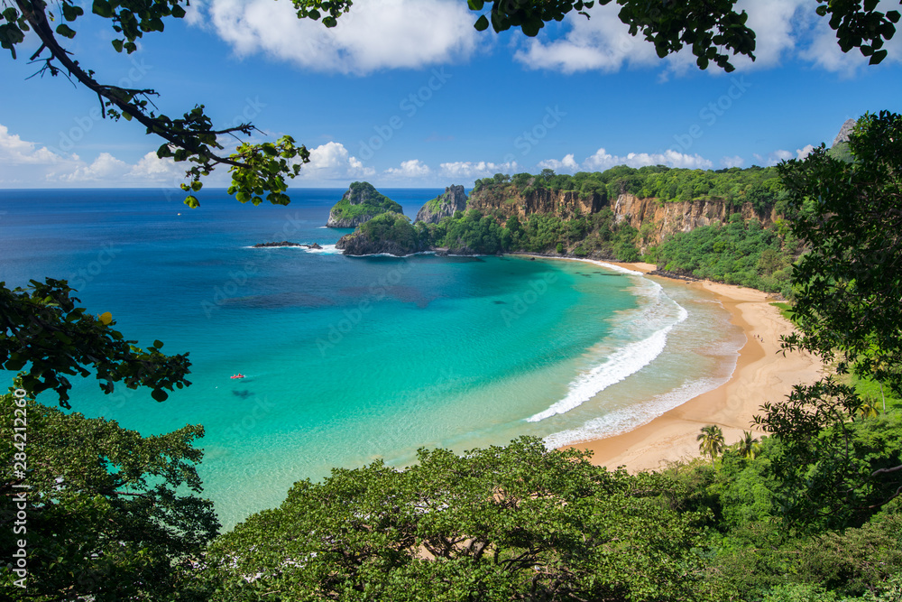
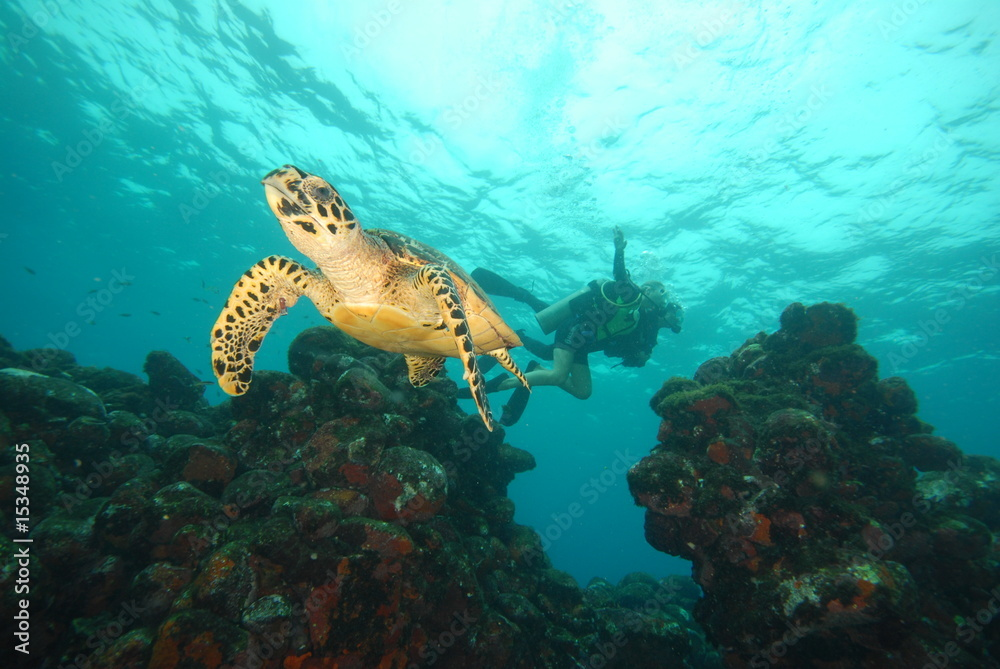
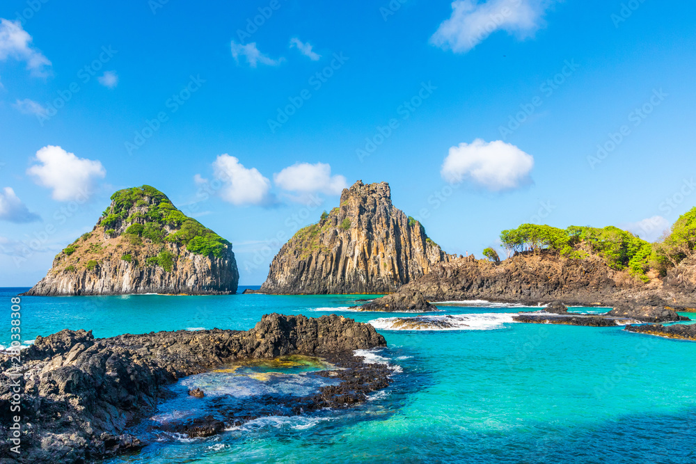

A INFOTRAVEL oferece os melhores pacotes para Fernando de Noronha! Confira as opções e compre sua viagem!

Conhecendo o Arquipélago em Pernambucano
Fernando de Noronha mexe com o imaginário dos brasileiros. O lugar tem fama de ser uma paraíso na Terra... E quer saber? É mesmo. Algumas de suas praias são as mais bonitas do mundo. Pudera: a água cristalina varia de tons de azul para esverdeados e é habitat de uma riquíssima vida marinha, que pode ser vista em qualquer praia, geralmente já pertinho da faixa de areia.
A ilha principal tem formações rochosas únicas, dignas de cartões-postais. Os mirantes oferecem vistas espetaculares para as praias durante o dia e o pôr do sol no fim da tarde. Noronha é um lugar que convida a passar um belo dia à beira-mar, intercalando o sol com deliciosos banhos de mar. Um arquipélago repleto de cantinhos para fazer snorkel ou mergulho com cilindro e admirar a uma curta distância peixes coloridos, tartarugas, arraias e também tubarões.

Aventura na Natureza
Quem visita Fernando de Noronha tem a experiência única de vivenciar, de perto e de forma intrínseca, a natureza e toda a sua beleza e biodiversidade conservadas dentro e fora da água. É um paraíso protegido por leis federais e estaduais, por meio da criação do Parque Nacional Marinho e da Área de Proteção Ambiental Estadual de Fernando de Noronha. Um lugar de beleza impressionante, com diversos tons de azul, onde você pode visualizar uma grande variedade de aves marinhas, golfinhos, tartarugas, caranguejos, tubarões, peixes, crustáceos e corais. Um orgulho para Pernambuco e para o Brasil.

Praia Destaque
Considerada uma das praias mais bonitas do Brasil, a Baía dos Porcos é um pequeno tesouro! Uma pequena faixa de areia entre pedras, com uma das vistas mais bonitas logo em frente: o Morro Dois Irmãos, cartão-postal de Fernando de Noronha.
A água tem uma tonalidade esverdeada, constrastando com os paredões e formações rochosas do entorno. Na maré baixa, formam-se piscinas naturais com peixinhos, que deixam todo o cenário ainda mais incrível. Mais um ótimo lugar para fazer snorkeling em Noronha — com sorte, dá até para observar tartarugas por ali.
Ainda tem tempo!! Adquira já seu pacote de férias conosco e comece seu 2024 bem em Noronha
1. Explore sem Limites:
Não importa o destino dos seus sonhos, aceitamos todos os cartões de crédito para garantir que você tenha a liberdade de explorar o mundo sem limitações. Seja para uma escapada romântica, uma jornada de aventura ou um retiro tranquilo, estamos aqui para atender a todos os seus desejos de viagem.
2. Facilidade e Rapidez:
Na INFOTRAVEL, acreditamos que planejar sua viagem deve ser tão emocionante quanto a viagem em si. Com a aceitação de todos os cartões de crédito, oferecemos um processo de reserva fácil e rápido. Basta escolher seu destino, selecionar suas datas e pagar com o cartão de crédito de sua escolha para iniciar sua jornada.
3. Flexibilidade de Pagamento:
Compreendemos que cada viajante tem seu próprio ritmo financeiro. Ao aceitar todos os cartões de crédito, oferecemos a flexibilidade de escolher opções de pagamento que se ajustem ao seu orçamento. Parcelamento, pontos de recompensa e benefícios exclusivos esperam por você quando você reserva conosco.
4. Segurança e Tranquilidade:
Sua segurança é nossa prioridade. Ao aceitar todos os cartões de crédito, garantimos transações seguras e protegidas, permitindo que você desfrute da antecipação da viagem sem preocupações financeiras. Além disso, estamos aqui para oferecer suporte em todas as etapas da sua jornada.
5. Experiências Personalizadas:
Na INFOTRAVEL, entendemos que cada viagem é única. Com a aceitação de todos os cartões de crédito, podemos personalizar suas experiências, proporcionando momentos memoráveis que atendam às suas expectativas e desejos específicos.
Estamos ansiosos para ajudá-lo a criar memórias duradouras em destinos incríveis. Reserve sua próxima aventura conosco e descubra o mundo com a facilidade e a conveniência que só a INFOTRAVEL pode oferecer. Viaje conosco, onde cada jornada é uma promessa cumprida.